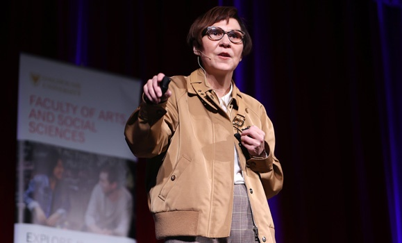
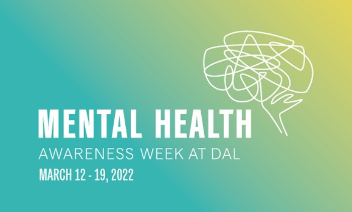
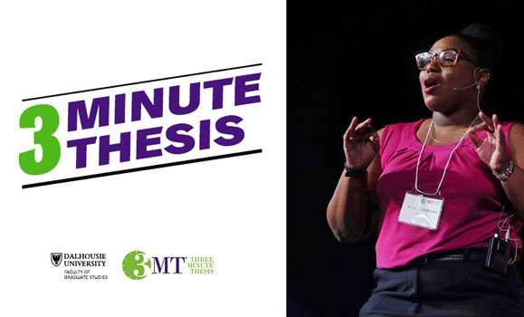

What's Happening at Dalhousie
Study skills and tutoring help available here

Now available: The latest edition of Dal Magazine
Don't miss anything - view all the upcoming important dates for 2022
Explore upcoming university events
Featured Dal News stories
"When the headlines die, so do the children”,Takeaways from Cindy Blackstock's Shaar Shalom lecture.
Creating connections and smashing stigmas: Dal's mental health awareness week 2022 set to begin.
A different kind of test drive: Local non-profit with Dal to help people encourage more people to go electric
Russia attacks Ukraine: Dal experts share insights on what Putin's invasion means for region and world
3 Minutes thesis returns: Grad students to battle it out on virtual stage for 2022 Competition
Ask an expert: Oksana Shkurska deciphers spotify CEO's response to Joe Rogan controversy
Other sections
COVID-19 information and updates
Download Dal Mobile - your campus community app